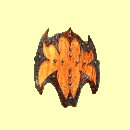
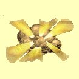

Magie vzduchu

Èarodìjovo oko
Mana: 1, Cena: 100, Potøebná úroveò dovednosti: Normální
Èarodìjovo oko zpùsobí, ¾e automapa ve spodním pravém rohu obrazovky ukazuje pozici nestvùr a ostatní zajímavá místa. Kouzlo trvá 1 hodinu za ka¾dý bod Magie Vzduchu.
| Normální | Zobrazuje jen terén a nestvùry | |
| Expert | Zobrazuje poklady | |
| Mistr | Zobrazuje dal¹í zajímavá a dùle¾itá místa | |
| Velmistr | Nestojí ¾ádnou manu |
Pád pírka
Mana: 2, Cena: 200, Potøebná úroveò dovednosti: Normální
Pád pírka chrání tvé postavy pøed zranìním, kdy¾ spadnou z vý¹ky vìt¹í ne¾ deset stop tím, ¾e zpomalí jejich pád. Kouzlo pùsobí na celou dru¾inu a doba trvání závisí na dovednosti Magie Vzduchu.
 |
Normální | Doba trvání 5 minut za bod dovednosti |
| Expert | Doba trvání 10 minut za bod dovednosti | |
| Mistr | Doba trvání 1 hodina za bod dovednosti | |
| Velmistr | Rychlej¹í zotavení |
Odolnost proti vzduchu
Mana: 3, Cena: 300, Potøebná úroveò dovednosti: Normální
Zvy¹uje odolnost v¹ech tvých postav proti kouzlùm Magie Vzduchu o mno¾ství úmìrné tvým bodùm dovednosti Magie Vzduchu. Efekt trvá hodinu za ka¾dý bod dovednosti.
| Normální | 1 bod odolnosti za bod dovednosti | |
| Expert | 2 bod odolnosti za bod dovednosti | |
| Mistr | 3 bod odolnosti za bod dovednosti | |
| Velmistr | 4 bod odolnosti za bod dovednosti |
Jiskry
Mana: 4, Cena: 400, Potøebná úroveò dovednosti: Normální
Jiskry vystøelí malé kulièky bleskù, které se odrá¾ejí od pøeká¾ek, dokud se netrefí nebo nerozplynou. Je tì¾ké øíci, kam budou smìrovat a tak je kouzlo nejlépe pou¾ívat v místnosti zaplnìné slab¹ími nestvùrami. Ka¾dá jiskra zpùsobí 2 body zranìní plus 1 za ka¾dý bod dovednosti Magie Vzduchu.
| Normální | Støednì rychlé zotavení, 3 jiskry | |
| Expert | Rychlé zotavení, 5 jisker | |
| Mistr | Rychlej¹í zotavení, 7 jisker | |
| Velmistr | Nejrychlej¹í zotavení, 9 jisker |
Skok
Mana: 5, Cena: 500, Potøebná úroveò dovednosti: Expertní
Po zakouzlení tvá dru¾ina skoèí do vzdálenosti 60 stop a mù¾e tak dosáhnout vysokých ramp èi teras. Pøi pádu ze skoku dru¾ina neutrpí zranìní.
| Normální | n/a | |
| Expert | Støední doba zotavení | |
| Mistr | Rychlej¹í zotavení | |
| Velmistr | Nejrychlej¹í zotavení |
©tít
Mana: 8, Cena: 750, Potøebná úroveò dovednosti: Expertní
Sni¾uje zranìní z útokù z dálky na polovinu (napøíklad kameny nebo ¹ípy) tím, ¾e zpomalí støelu pøedtím, ne¾ zasáhne.
|  | Normální | n/a |
| Expert | Doba trvání 1 hodina + 5 minut za bod dovednosti | |
| Mistr | Doba trvání 1 hodina + 15 minut za bod dovednosti | |
| Velmistr | Doba trvání 1 hodina + 1 hodina za bod dovednosti |
Blesk
Mana: 10, Cena: 1000, Potøebná úroveò dovednosti: Expertní
Z ruky sesílatele se vystøelí blesk na samostatný cíl. V¾dy zasáhne a zpùsobí 1-8 bodù zranìní za bod dovednosti v Magii Vzduchu.
| Normální | n/a | |
| Expert | Støední doba zotavení | |
| Mistr | Rychlej¹í zotavení | |
| Velmistr | Nejrychlej¹í zotavení |
Neviditelnost
Mana: 15, Cena: 1500, Potøebná úroveò dovednosti: Mistrovská
Neviditelnost pùsobí na my¹lenky blízkých nestvùr tak, ¾e zpùsobí neviditelnost dru¾iny, dokud ta nepromluví nebo nezaútoèí. Jakýkoliv útok, a» u¾ úspì¹ný èi nikoli, poru¹í toto kouzlo. Kouzlo nelze zakouzlit v blízkosti nepøátelských nestvùr.
| Normální | n/a | |
| Expert | n/a | |
| Mistr | Doba trvání 10 minut za bod dovednosti | |
| Velmistr | Doba trvání 1 hodina za bod dovednosti |
Imploze
Mana: 20, Cena: 2000, Potøebná úroveò dovednosti: Mistrovská
Imploze je nechutné kouzlo, které pùsobí na samostatný cíl tak, ¾e znièí vzduch okolo nìj a náhlý vír vzduchu a blesky zpùsobí 10 bodù zranìní plus 1-10 bodù za ka¾dý bod dovednosti Magie Vzduchu.
|  | Normální | n/a |
| Expert | n/a | |
| Mistr | Støední doba zotavení | |
| Velmistr | Rychlé zotavení |
Létání
Mana: 25, Cena: 3000, Potøebná úroveò dovednosti: Mistrovská
Dá tvé dru¾inì schopnost létání. Toto kouzlo je velmi drahé a pracuje pouze venku, ale je velmi u¾iteèné. Létání bere jeden bod many ka¾dých pìt minut letu (tj. kdy¾ se nedotýká¹ zemì).
| Normální | n/a | |
| Expert | n/a | |
| Mistr | Doba trvání 1 hodina za bod dovednosti | |
| Velmistr | Neubírá body many bìhem letu |
Pád hvìzd
Mana: 30, Cena: 5000, Potøebná úroveò dovednosti: Velmistrovská
Pøivolá hvìzdy z nebe na spálení a znièení tvých nepøátel. Je pøivoláno 20 hvìzd a ka¾dá zpùsobí 20 bodù zranìní plus 1 bod za ka¾dý bod dovednosti Magie Vzduchu. Pøi zakouzlení se rad¹i dr¾ od nepøátel trochu dál... Toto kouzlo funguje jen venku!
| Normální | n/a | |
| Expert | n/a | |
| Mistr | n/a | |
| Velmistr | Toto kouzlo je tak dobré, jak jen mù¾e být! |